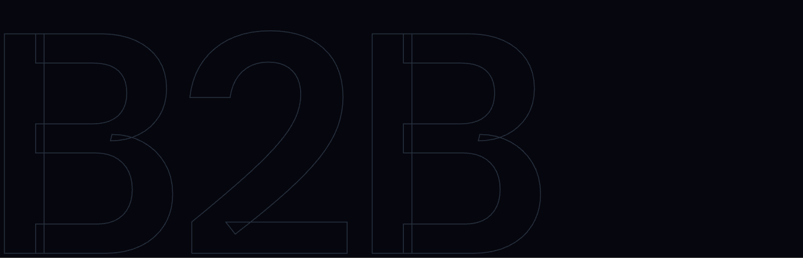
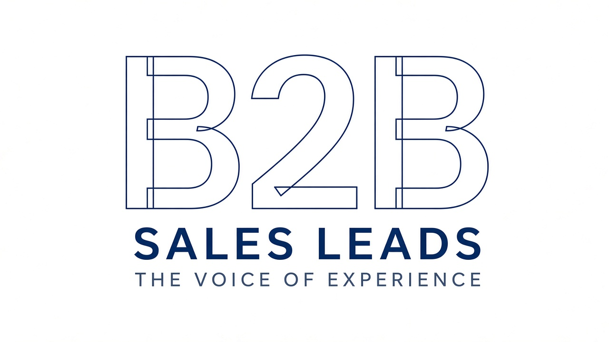

From your site (reference)
Site — Horizontal growth
Original lockup you liked

Site — Outlined B2B
Original hero / section treatment you liked
Refined preferred set
Primary lockup — Dark
Nav / headers · THE VOICE OF EXPERIENCE
Primary lockup — Light
Light surfaces / print
Hero mark — Outlined B2B (Dark)
Large dark sections

Hero mark — Outlined B2B (Light)
Light reverse
Combined exploration
Outlined B2B + growth mark stacked